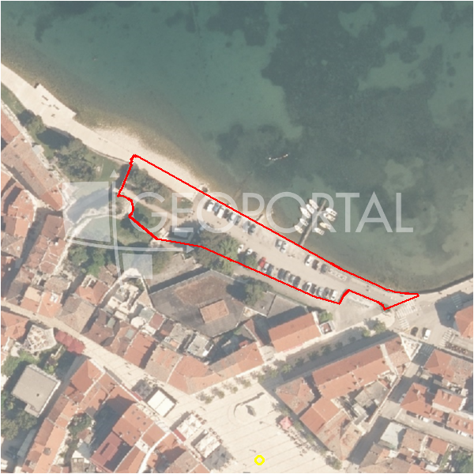

#36306 · Odlično gradevinsko zemljište u blizini Poreča
Poreč, Poreč, Istarska · zemljiste · njuskalo · status active · oglas ↗
Ocjena
- Score
- 61 rule 61 · LLM – · 12.09.2026.
- RLV
- 1,84 M€ (828 €/m²) · ratio 8,96
- Ukupna investicija
- 4,58 M€
- GBP
- 1.775 m²
- Feedback
- –
- CRM
- –
Oglas
- Cijena
- 205.000 € (91 €/m²)
- Površina
- 2.250 m² · DKP 2.219 m² (odstupanje -1,4 %)
- Prodavatelj
- agencija · Licencirana agencija za prodaju nekretnina ALMA DOM
- Prvi put
- 11.09.2026. · zadnje 11.09.2026. · 0 d na tržištu
Povijest cijene
| Datum | Cijena |
|---|---|
| 11.09.2026. | 205.000 € |
Flagovi
natura_uz_gradnju Natura/zaštićeno područje uz građevinsku zonu — posebni uvjeti (−5)zop_70_100 ZOP pojas 70/100 m (−10)
zone_uncertainty zona nije pregledana (reviewed: false) (−5)
llm_pending LLM ekstrakcija/ocjena nedostupna
Komponente score-a
| rlv | {'gbp': 1775.2080000000003, 'kis': 0.8, 'nkp': 1331.4060000000002, 'noi': None, 'rlv': 1836761.4078260881, 'ratio': 8.959811745493113, 'value': None, 'phases': 1, 'profile': 'obala_visestambeno', 'gdv_neto': 7455873.6000000015, 'cost_soft': 177520.80000000005, 'gdv_bruto': 9319842.000000002, 'kis_known': False, 'total_inv': 4584311.680000001, 'cost_build': 3550416.0000000005, 'cost_other': 639074.8800000001, 'cost_sales': 279595.26000000007, 'demolition': False, 'gbp_source': 'kis', 'rlv_per_m2': 827.7391304347831, 'parcel_area': 2219.01, 'parcelation': False, 'roi_on_cost': 0.5653993098479727, 'profit_at_ask': 2591966.6600000006, 'cost_demolition': 0.0, 'total_inv_phase': 4584311.680000001, 'parcel_area_effective': 2219.01, 'sale_price_per_m2_nkp': 7000.0} |
| hard | [] |
| info | ['llm_pending'] |
| rubric | {'permits': {'max': 5.0, 'detail': {'permit': 'none'}, 'points': 0.0}, 'location': {'max': 15.0, 'detail': {'source': 'rlv.yaml:istra_zapad/row1', 'sale_price_per_m2_nkp': 7000.0}, 'points': 15.0}, 'physical': {'max': 4.0, 'detail': {'slope_pct': 12.84, 'slope_points': 1.716, 'sea_row1_bonus': True}, 'points': 2.72}, 'liquidity': {'max': 3.0, 'detail': {'n_cuts': 0, 'points_cut': 0.0, 'points_days': 0.008333333333333333, 'seller_type': 'agencija', 'points_fresh': 0.5, 'price_cut_pct': None, 'days_on_market': 1, 'points_private': 0}, 'points': 0.51}, 'rlv_ratio': {'max': 25.0, 'detail': {'rlv': 1836761, 'ratio': 8.96, 'asking_price': 205000.0}, 'points': 25.0}, 'ticket_fit': {'max': 10.0, 'detail': {'asking_price': 205000.0}, 'points': 5.47}, 'zone_quality': {'max': 8.0, 'detail': {'reason': 'zona nepoznata', 'source': 'nepoznato', 'zone_class': None}, 'points': 2.0}, 'profit_potential': {'max': 20.0, 'detail': {'roi_on_cost': 0.565, 'profit_at_ask': 2591967}, 'points': 20.0}, 'price_vs_benchmark': {'max': 10.0, 'detail': {'source': 'auto:Poreč', 'deviation': 0.476, 'ask_eur_m2': 91, 'benchmark_eur_m2': 173.89}, 'points': 10.0}} |
| weights | {'llm': 0.4, 'rule': 0.6, 'model': 0.0} |
| penalties | {'zop_70_100': 10, 'zone_uncertainty': 5, 'natura_uz_gradnju': 5} |
| raw_score | 80,7 |
| rlv_notes | [] |
| flag_notes | {'natura': True, 'max_gbp': 1775, 'zop_band': '70', 'total_inv': 4584312, 'zone_code': None, 'zone_class': None, 'zone_known': False, 'zone_source': 'nepoznato', 'zone_reviewed': None, 'protected_area': False} |
| caps_applied | [] |
GIS
- Čestica
- k.o. 323748, k.č. 370 (pin_buffer, 0,79); k.o. 323748, k.č. 574 (pin_buffer, 0,74); k.o. 323748, k.č. 655/1 (pin_buffer, 0,71)
- Zona
- – (–)
- kig / kis / katnost
- – / – / –
- GP / UPU
- – · UPU –
- Pristup / nagib
- unknown · 12,8 % (max 26,4 %)
- More
- 0 m · red 1 · ZOP 70
- Zaštite
- Natura da · zaštićeno ne · kulturno dobro ne
- Zgrade na čestici
- 0 %
- Match
- 0,79
Karta
Ortofoto (DOF)

RLV kalkulacija — pretpostavke
| gbp | {'value': 1775.2080000000003, 'source': 'kis'} |
| kis | {'value': 0.8, 'source': 'default_profila'} |
| sea_row | {'value': '1', 'source': 'gis'} |
| soft_pct | {'value': 0.05, 'source': 'profil'} |
| nkp_ratio | {'value': 0.75, 'source': 'profil'} |
| cost_other | {'value': 639074.8800000001, 'source': 'profil: doprinosi+uređenje po m² GBP, financiranje+rezerva % gradnje'} |
| parcel_area | {'value': 2219.01, 'source': 'dkp'} |
| asking_price | {'value': 205000.0, 'source': 'oglas'} |
| margin_on_cost | {'value': 0.15, 'source': 'profil'} |
| build_cost_per_m2_gbp | {'value': 2000.0, 'source': 'profil'} |
| sale_price_per_m2_nkp | {'value': 7000.0, 'source': 'rlv.yaml:istra_zapad/row1'} |
| transfer_tax_and_acquisition | {'value': 0.06, 'source': 'profil'} |
Ekstrakcija iz oglasa
| utilities | ['struja', 'voda'] |
Benchmarks mikrolokacije
| Vrsta | Vrijednost | n | Od | Izvor |
|---|---|---|---|---|
| land_ask_eur_m2 | 174 | 302 | 11.09.2026. | auto |
| newbuild_sale_eur_m2_nkp | 3.695 | 8 | 11.09.2026. | auto |
Opis oglasa
Odlično građevinsko zemljište, u mirnom mjestu u blizini Poreča. Struja i voda su u neposrednoj blizini. Zemljište je pravilnog oblika, i idealno je za izgradnju jedne ili dvije kuće. INFO: AZRA +385 91 611 5706 +385 98 420 885 azra@almadominvest.com